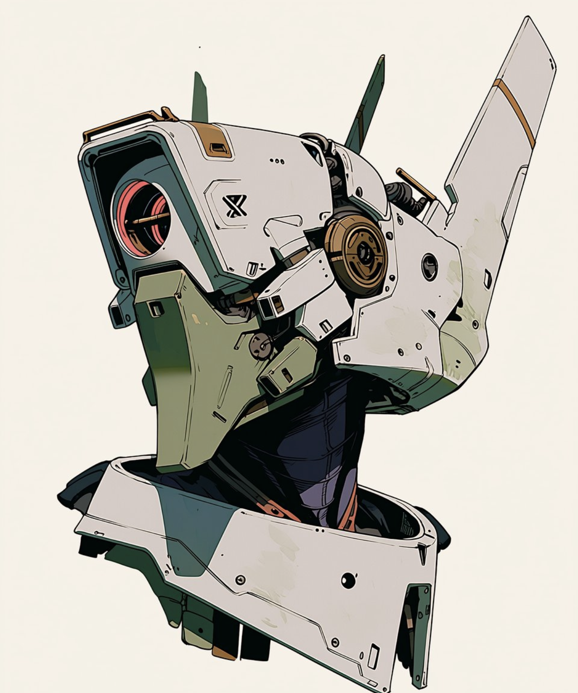

Primary Dossier View

optic housing / primary sensor ring
rear wing panel / signal fin geometry
brass sensor joint / exposed rotary node
chin guard plate / lower armor gate
neck connection / internal cable sheath